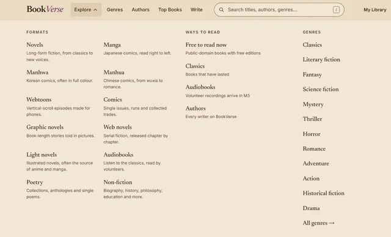
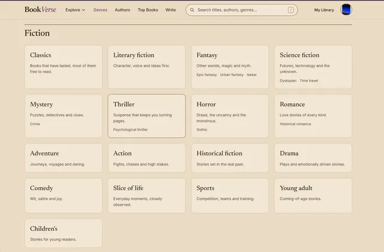
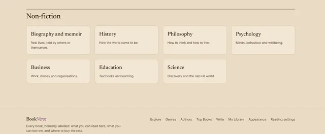
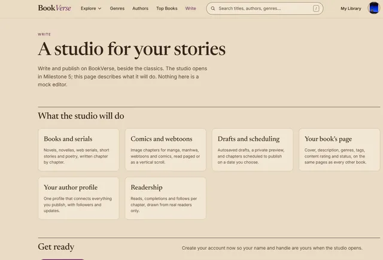
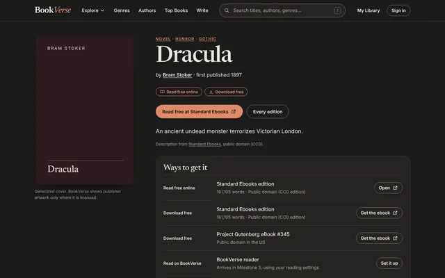

WebsitesAppsUI/UX
BookVerse
One place for every kind of story.
In development
BookVerse is a digital book platform for readers who move between formats: novels, manga, manhwa, manhua, webtoons, comics, graphic novels, web and light novels, audiobooks, poetry and non fiction. A first release is live as a preview. The reader, the full catalogue, Top Books and the writer studio are still being built.

- Type
- Web platform
- Built with
- React 19, React Router 7, TypeScript, Supabase
- Live preview
- Hosted on Netlify
- My role
- Product owner, design direction and development
The problem
Readers no longer stay in one format. The same person reads a classic novel, follows a webtoon and listens to an audiobook, but each lives on a different site with its own account and its own way of keeping a library. Writers face the same split when they want to publish.
The vision
One structured place to discover books, keep a personal library and, later, write and publish next to the classics. Discovery is organised by format and genre, every book is honestly labelled with where it can be read, and readership numbers will only ever come from real readers.
Intended experience
Discover
Browse by format, genre or author, or search, and open a book page that says plainly what you can read here, borrow or buy elsewhere.
Read
Read free editions on BookVerse itself with reading settings for text, comics and audio.
Keep a library
Save books to a personal library and organise it.
Write
Writers publish books, serials, poetry and comics from one author profile, with a name and handle that are theirs.
What exists today and what is planned
Explore menu by formatBuilt
Novels, manga, manhwa, manhua, webtoons, comics, graphic novels, web novels, light novels, audiobooks, poetry and non fiction, plus ways to read such as Free to read now.
Genre pagesBuilt
Fiction and non fiction genres with short descriptions and sub genres such as epic fantasy, dystopian, crime and gothic.
Book pages with free editionsBuilt
Public domain books list where to read or download them free, from sources such as Standard Ebooks and Project Gutenberg.
Themes and reading settingsBuilt
Eight colour themes, accent colours and separate settings for text, comics and audio, with accessible reading fonts.
AccountsBuilt
Sign in with Supabase, with preferences saved to your account. Creating an account now reserves your name and handle for the writer studio.
Write pageBuilt
A page describing what the writer studio will do. It is a description, not a working editor.
Top BooksPlanned
Rankings will only use real reading data, so this section is not implemented yet.
Full catalogue and discoveryPlanned
The starter shelf grows into a full catalogue with richer discovery.
Built in readerPlanned
Read on BookVerse itself, using your reading settings.
Personal library organisationPlanned
Saving and organising books into a personal library.
Writer studio and author spacesPlanned
Books and serials, comics and webtoons, drafts and scheduling, book pages, author profiles and readership.
Built means it works in the live preview today. Planned items come in later milestones; the writer studio is planned for Milestone 5.
How it is built
Milestone by milestone
Each milestone has to work on its own before the next starts, and pages for future features describe them without faking them.
Static and fast
The app is pre rendered into a static site on Netlify, so pages load without an application server.
Tested
Unit tests with Vitest, browser tests with Playwright and accessibility checks with axe.
Secure by default
A content security policy on every page, and a build check that stops secrets from reaching the browser.
Stack
- React 19
- React Router 7
- TypeScript
- Supabase
- Netlify
- Vitest
- Playwright
- axe
Screens
Screenshots of the live preview.
 Home with the editor's pick
Home with the editor's pick
Explore menu: formats, ways to read and genres
Fiction genres
Non fiction genres
Write: what the studio will do
Book page


Status
In development. The preview is live; the full catalogue, the reader, Top Books, library organisation and the writer studio come next, in that order of milestones.